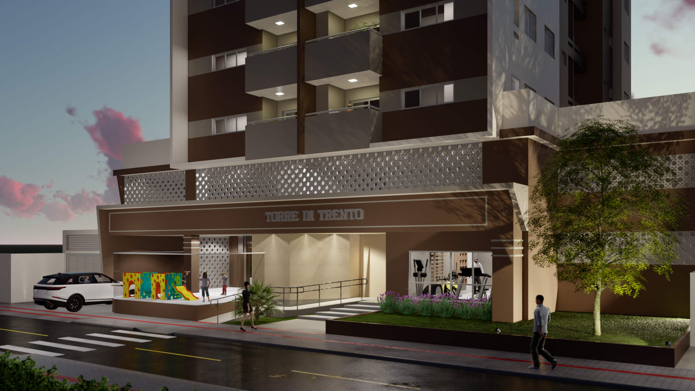
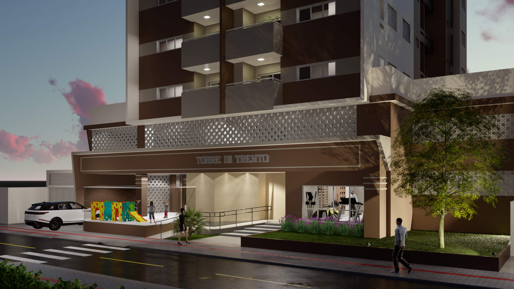
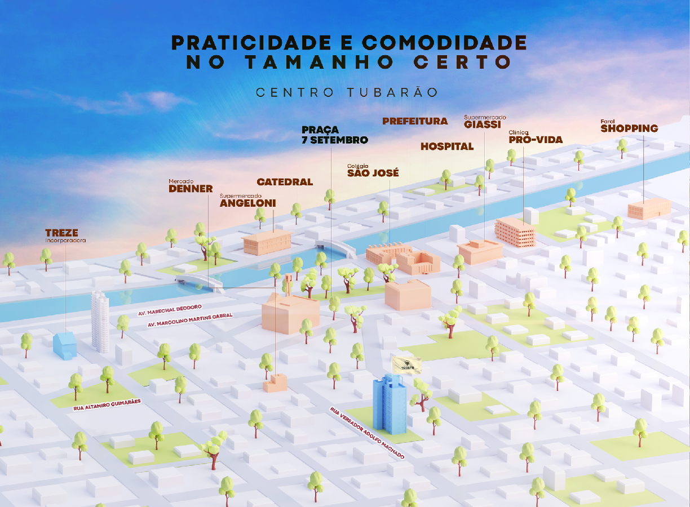
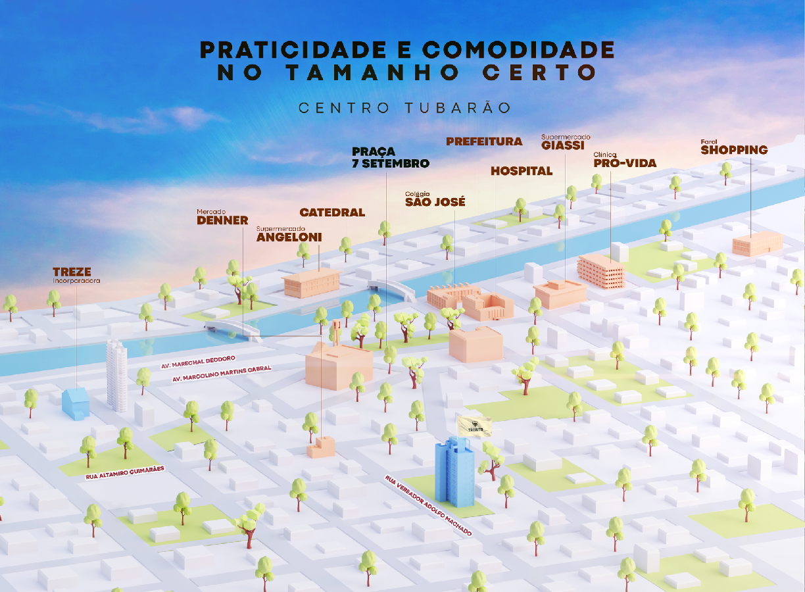
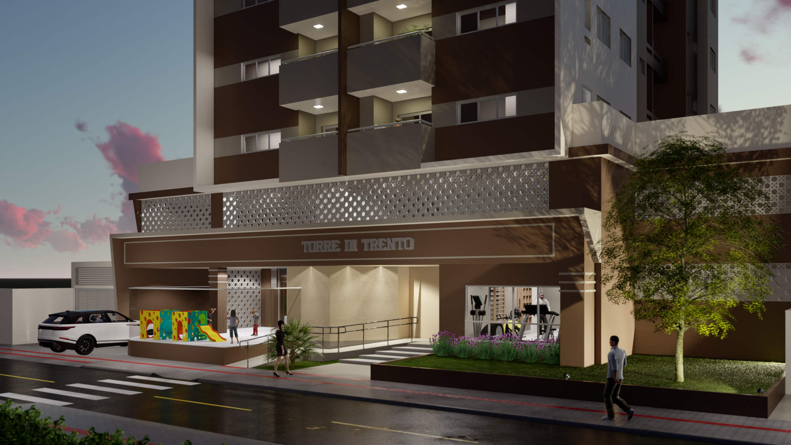
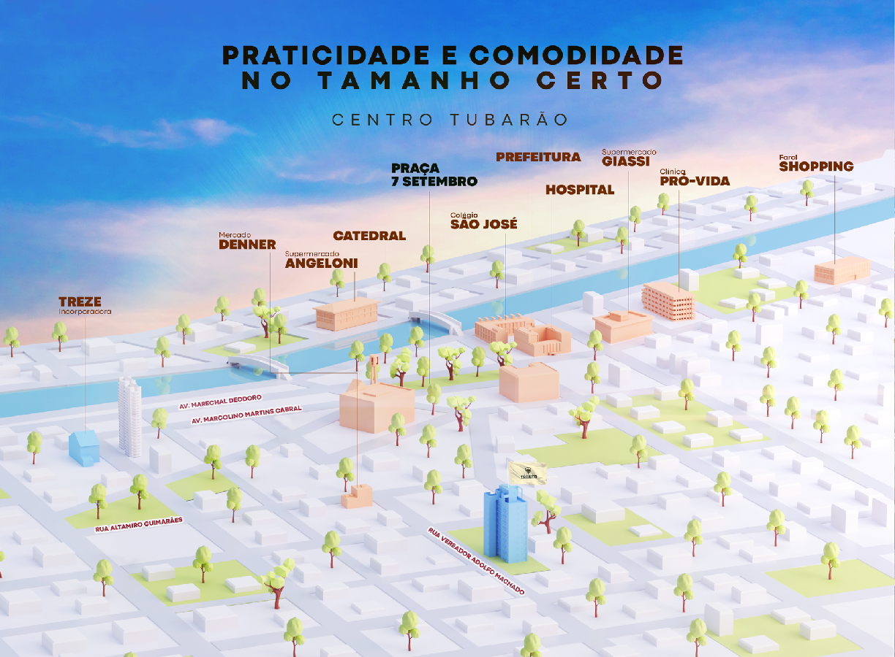

 

Trento, localizado na região Trentino-Alto Ádige, é uma cidade calma, muito bonita e cortada pelo rio Ádige. Também sendo considerada por muitos como uma das Cidades Mais Simpáticas de Itália, características que ligam essa cidade italiana ao município de Tubarão, que recentemente se tornou uma das 10 cidades mais simpáticas do Brasil, além de também ter se desenvolvido as margens de um rio. A Piazza del Duomo é o centro da vida pública da cidade, um espaço aberto cercado por Palácios Renascentistas onde ao centro se encontra a famosa Fonte de Netuno, ícone da cidade. Referências como materiais, calçamento e construções foram usadas tanto para construção arquitetônica, quanto para a identidade do empreendimento.

